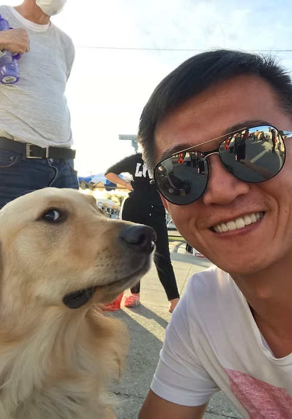

Dr. Song Liu 刘松博士

- 职务：上海科技大学信息学院助理教授，博士生导师
- 人才称号：上海浦江人才，上海市海外高层次引进人才，优秀青年
- 研究方向：超声机器人、微纳操控、MEMS、人工智能等
- 论文发表：发表于 Nature Physics、IEEE T-RO、TBME 等国际顶级期刊
- 荣誉：ICRA 2025 最佳论文奖（前1%）、自动化奖提名
- 2020 - 至今 上海科技大学-信息科学与技术学院 研究员、博导、独立PI
- 2019 - 2020 美国南加州大学-维特比工学院 博士后
- 2017 - 2018 香港城市大学-机械与生物医学工程系 博士后
- 2014 - 2017 香港城市大学-生物医学工程专业 博士
- 2012 - 2017 中科院自动化所-控制科学与控制工程专业 博士
- 2008 - 2012 山东大学-测控技术与仪器专业 学士
主要从事超声物理、自动化、生物医学工程等方向的交叉研究。
以第一/通讯（含共同）作者发表论文46篇。其中，SCI期刊论文26篇，包括Nature Physics 1篇（共一兼共通讯）；IEEE Trans.系列汇刊13篇，如IEEE T-RO。
获得国家自然科学基金委“优秀青年科学基金”资助，入选上海市领军（海外）人才和浦江人才计划。在国际顶级会议 IEEE ICRA 上获得最佳会议论文奖提名和自动化专项奖提名。曾荣获中国科学院院长奖及中国自动化学会优秀博士论文提名，
近五年主持国家自然科学基金青年科学基金项目1项，上海市浦江人才项目1项，上海科技大学校级项目1项。在超声操控领域主持项目3项，共获数百万研究经费支持。
土耳其科齐大学校长、德国马普所教授 Metin Sitti来访AMNR实验室，并与刘松教授进行学术交流。